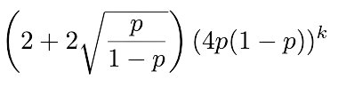
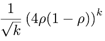
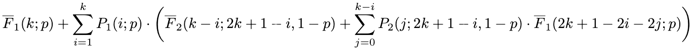
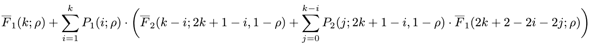

By: Ray Sun
The most optimal attack on a blockchain is private-mining where an individual secretly mines blocks and attempts to create a longer private chain than the public chain. If successful, this enables a miner to gain an unfair share of block rewards. The goal of this site is to more easily demonstrate the findings of Bitcoin's Latency-Security Analysis Made Simple with useful tools and visuals.
Theorems
Get the confirmation depth for a certain probability of safety violation
Select theorem:
Honest Percentage: (default .9)
Desired probability of safety violation:
Theorem 1 Maximum
Confirmation Depth (k): (usually 6 for Bitcoin or 30 for Ethereum)
Honest Percentage (p):
Total Mining Rate: (default 1/600 blocks per second)
Block Propagation Delay Upper Bound: (default 10 seconds)
Theorem 1 Minimum
Confirmation Depth (k): (usually 6 for Bitcoin or 30 for Ethereum)
Honest Percentage (p):
Theorem 2 Maximum
Confirmation Depth (k): (usually 6 for Bitcoin or 30 for Ethereum)
Honest Percentage (p):
Total Mining Rate: (default 1/600 blocks per second)
Block Propagation Delay Upper Bound: (default 10 seconds)
Theorem 2 Minimum
Confirmation Depth (k): (usually 6 for Bitcoin or 30 for Ethereum)
Honest Percentage (p):
Visualize the Theorems
Using a 90% honest percentage, 1/600 total mining rate, and 10 second block propagation delay upper bound, as the confirmation depth increases, the probability of safety violaton decreases logarithmically, resulting a neglible probability of an attack. Therefore, waiting for a greater confirmation depth greatly reduces the likelihood of an attack. Also, Theorem 2 more accurately models the probability of safety violation because both its lower and upper bounds are tighter than theorem 1's.
Using a confirmation depth of 6, 1/600 total mining rate, and 10 second block propagation delay upper bound, as the honest percentage increases, the probability of safety violaton decreases more and more. A network with a 50-60 honest percentage have a tremendous likelihood that many successful attacks can occur so users must use networks with high honest percentages. Again, theorem 2 more accurately models the probability of safety violation because both its lower and upper bounds are tighter than theorem 1's.
Bitcoin Price Predictor
About
This project was undertaken by Ray Sun under the generous mentorship of professor Ling Ren